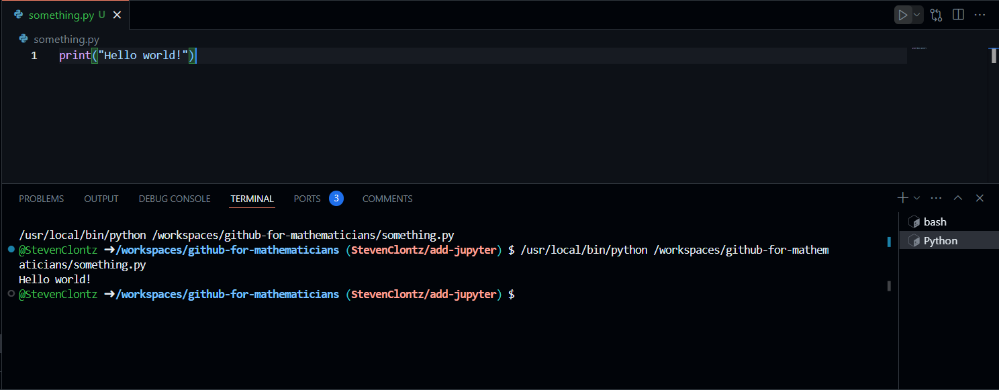
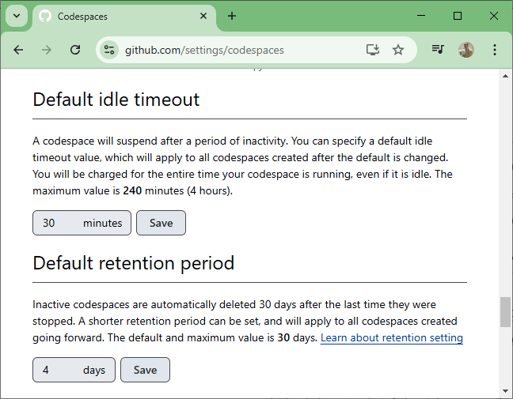
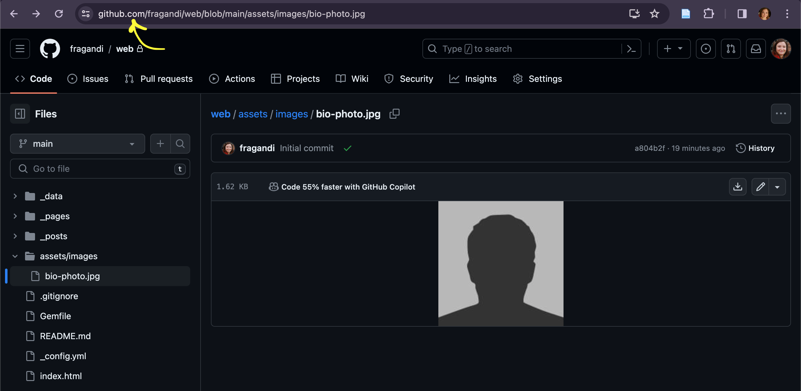
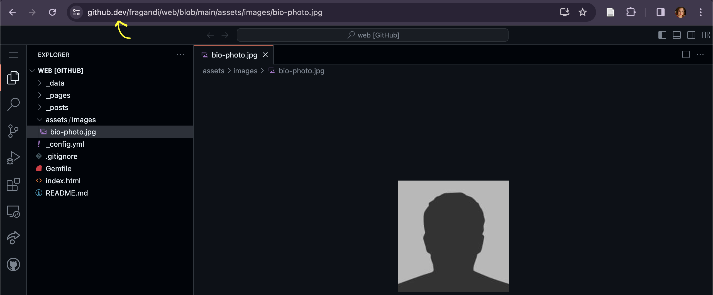
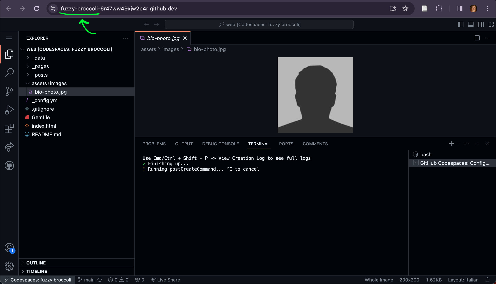

While the quick GitHub.dev interface we used to get started in Chapter 2 is great for quick uploads or edits, many projects require the ability to run applications and execute code as you would on your personal computer. Fortunately, GitHub offers a service to run such programs on their servers.
. Each codespace is essentially a personal virtual computer that runs in the cloud, that you access through your web browser.
Full documentation on Codespaces is available on docs.github.com 2
docs.github.com/en/codespaces
.
Note3.1.2.
To create a Codespace on any repository you own, use the green “Code” button, select the Codespaces tab, and press the green “Create codespace on [branchname]” button.
After the Codespace boots up, you’ll have an interface similar to the GitHub.dev environment you learned about in Section 2.4.
Note3.1.3.
Here are a few key differences between GitHub.dev and Codespaces.
A GitHub.dev URL looks like github.dev/username/reponame, while a Codespace URL looks like random-word-123randomcharacters789.github.dev.
GitHub.dev is quicker to load than a Codespace.
GitHub.dev has a much more limited selection of VS Code extensions to use.
You can only install applications and execute code on a Codespace.
One similarity between GitHub.dev and Codespaces (besides the obviously similar VS Code user interfaces), is that your work is still private to you and can only be shared with the public (and retained in the long term) by committing and pushing your progress every so often to your GitHub.com repository. The Source Control tool works slightly different in a Codespace, however.
Note3.1.4.
One quick way to commit and push your changes from a Codespace is to use “Source Control” from the left toolbar.
Enter a short commit message describing your changes as a note to yourself. (This is required and can be a pain to fix if you forget to do so!)
Select “Commit & Sync” from the menu next to the green Commit button.
In the dialogs that follow, I suggest choosing to “Always” stage all your changes and commit them directly, then “OK, Don’t Show Again” when told this action will pull and push commits from and to origin/main, and finally “Yes” that you would like your Codespace to periodically run git fetch.
Section3.2Writing and Running Code
Now that we’ve provisioned our Codespace virtual cloud computer, we can use it to write and execute code using our web browser for essentially any programming lanugage.
Our first example will be Python, a popular general-purpose programming language (and the same language we will use in Chapter 7 for Jupyter notebooks). In your Codespace, right-click on the file Explorer to create a “New File...”. Name this file something.py so your Codespace recognizes the file as a Python script (due to the .py file extension). This should trigger the prompt shown in Figure 3.2.1 to install a Python extension - go ahead and do it.
Figure3.2.1.Prompt to install the Python extension.
Add the line print("Hello world!") to your file. A “play” icon (▶) should be displayed in the upper-right corner of the text editor (thanks to the Python extension you installed). Clicking this button should execute the code to print a greeting as in Figure 3.2.2.

Figure3.2.2.Running a Python script in a Codespace.
Unless your Codespace has been customized via a .devcontainer.json file (which we won’t get into here), you’ll be using the default Codespace image provided by GitHub. This environment is ready to execute code from various standard programming lanugages, though for some of them you may need to run the script using the Terminal.
Definition3.2.3.
A terminal is a command-line prompt used to run programs that don’t have a graphical user interface. Type the command and hit Enter to run it.
Remark3.2.4.
To open a terminal on demand in a Codespace, use the shortcut Ctrl/Cmd+Shift+`.
What do you think the programs in Listing 3.2.5, Listing 3.2.6, and Listing 3.2.7 will output? Copy-paste them into a file in your Codespace, then run to find out!
# name this Python file something.py
# execute using the ▶ button or by running this in a terminal:
# python something.rb
a,b = 1,1
print(a)
print(b)
for _ in range(10):
print(a+b)
a,b = b,a+b
Listing3.2.5.Sample Python code
# name this Ruby file something.rb
# execute by running this in a terminal:
# ruby something.rb
a,b = 1,1
puts a
puts b
10.times do
puts a+b
a,b = b,a+b
end
Listing3.2.6.Sample Ruby code
// name this Javascript file something.js
// execute by running this in a terminal:
// node something.js
let a = 1, b = 1
console.log(a)
console.log(b)
Array.from({ length: 10 }, _ => {
console.log(a+b)
let _a = a
a = b
b = _a + b
})
Listing3.2.7.Sample Javascript code
Section3.3Managing Your Codespaces
GitHub users are provided with a limited amount of free Codespace hours and storage each month, with additional resources available to Pro users, including those with the free GitHub Education benefit (Note 2.1.2). If needed, there is the option to pay for additional resources.
As a mathematician who almost exclusively uses GitHub Codespaces for doing the kinds of work described in this handbook (and does so for much longer periods of time than a typical mathematician), I’ve only surpassed GitHub’s free quota on the rare occassion (and when I do, I’ve paid only \(\$2\)-\(\$6\) per month). I accomplish this by halting my Codespaces when I’m not actively working on them.
Note3.3.1.
To manage your Codespace resources, visit https://github.com/codespaces. You can stop a Codespace temporarily to preserve your hourly quota, and delete a Codespace you don’t plan to use for a while to save on your storage quota. While actively working in a Codespace, you can stop it by pressing Ctrl/Cmd+Shift+P, typing stop current codespace, and confirming.
In any case, a stopped Codespace can be restarted later when you want to resume work, even if you haven’t committed and pushed your changes. (But be warned: a stopped Codespace and its uncommitted changes may be deleted by GitHub after a few days of inactivity, so don’t leave it alone for long.)
A deleted Codespace can always be recreated later based upon your most recent commit.
to adjust the default time your Codespace can idle before it times out (to save your compute time resources), and to adjust the default time your Codespace will be retained before it is deleted (to save your storage resources).

Screenshot of a web browser. Its text follows:
Default idle timeout
A codespace will suspend after a period of inactivity. You can specify a default idle timeout value, which will apply to all codespaces created after the default is changed. You will be charged for the entire time your codespace is running, even if it is idle. The maximum value is 240 minutes (4 hours).
Default retention period
Inactive codespaces are automatically deleted 30 days after the last time they were stopped. A shorter retention period can be set, and will apply to all codespaces created going forward. The default and maximum value is 30 days. Learn about retention setting
Figure3.3.3.Screenshot of Codespace management settings
Putting it all together, we have seen three ways to access files on your repo. Going from the least easy to edit to the most editable we have: GitHub.com, GitHub.dev, random-codespace-string.github.dev. Here is what these environments look like.



Figure3.3.4.Repo from different points of view.
Section3.4Powering up your Codespce
As of January 2025, a default codespace will use a 2-core processor and 8GB of RAM, with a quota of 60 usage hours and 15GB storage per month. (This is increased to 90 usage hours and 20GB storage for Pro/Education users.) This is fine for many tasks, but if you’re doing data analysis (Chapter 7) or formalized mathematics (Section 8.3) you may want some more resources at your disposal.
Remark3.4.1.
You can double (or quadruple, or \(8\times\text{,}\) etc.) your resources by “changing the machine type”. There are several ways to accomplish this, via https://github.com/codespaces/, or by typing “Change Machine Type” in the Codespace command pallette (accessed via Ctrl/Cmd+Shift+P).
Note however, that if you double your resources, you are also doubling your usage time (e.g. running a 4-core machine uses one hour of your quota every 30 minutes).
Section3.5Custom Codespaces
A key feature of Codespaces is that they can be customized by the use of a .devcontainer.json file (or .devcontainer directory). Such files describe the virtual machine that should be provisioned when creating a Codespace, allowing for the automatic installation of appropriate software/libraries/dependencies necessary for the use of a given repository.
Remark3.5.1.
Setting up a custom .devcontainer is a slick way to ensure you and your collaborators/students are running exactly the same software (including versions, dependencies, etc.)! No more “It works on my machine” while “I can’t get it to work on my machine”!